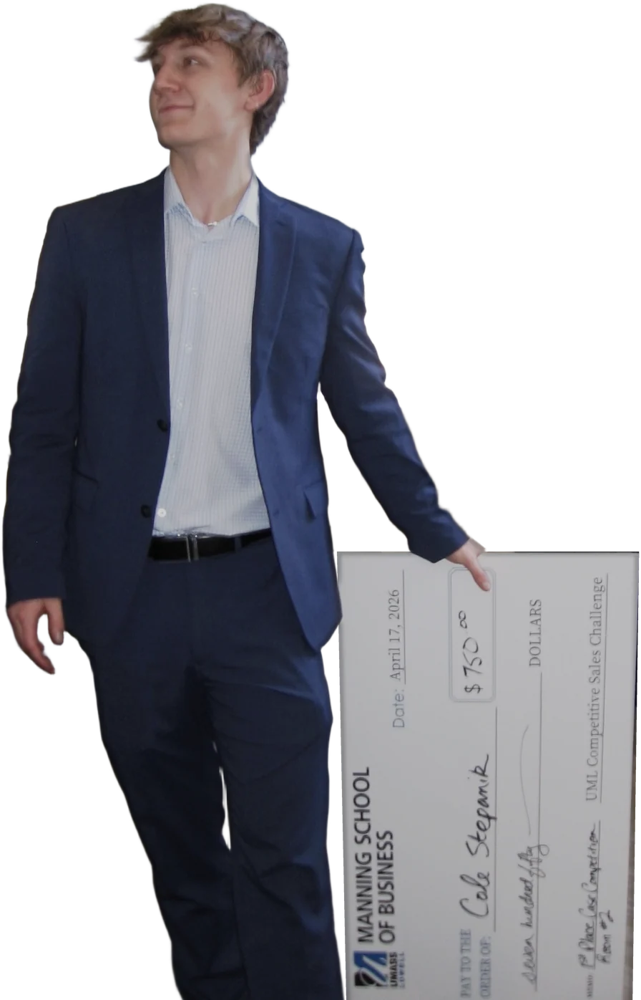
Cole Stepanik builds AI for finance.
Finance and Accounting senior at UMass Lowell. I cold call business owners for a search fund, so I built the workspace I wanted: Ownerhound.
- FounderCommonwealth Capital Research
- Lead InternAnoush Holdings
- Senior Class PresidentUMass Lowell
- CaptainIntercollegiate Sales Team
- Finance ChairAI Multidisciplinary Society
- FINRA SIEPassed summer 2026
ownerhound.com, sample data
FlagshipLive
Ownerhound
A cold call workspace, built by a cold caller.
- Verified before you dial. Phones, owners, licenses and entities checked against the company's own site and state records.
- One screen per call. Owner, number, checks and the outcome on a single call card.
- Built from the phone. I make owner calls every week for a search fund, so I built the tool I could not buy.
Skills and side projects
Tools I built and use for real.
Smaller tools for my own work, running every day. The 2nd Brain comes with a setup guide so you can build your own.
-
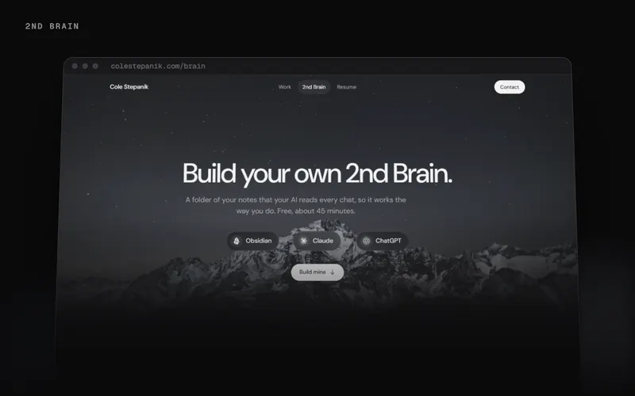
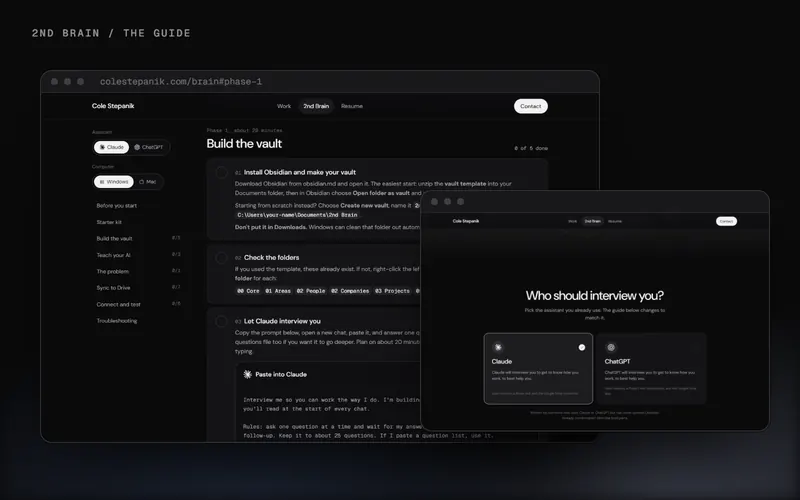
2nd Brain
A personal operating system. An Obsidian vault holds my priorities, decision rules, people and projects. Claude skills read it at the start of every session, make calls the way I would, and write back what they learned.
- Loads only the context a task touches
- Ranked priorities and triage rules in my own words
- Synced through Google Drive, so it works from my phone too
-
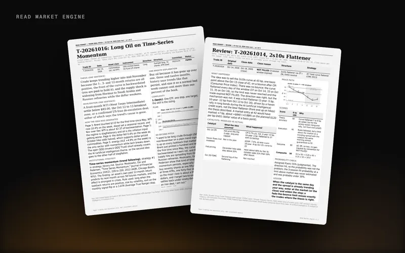
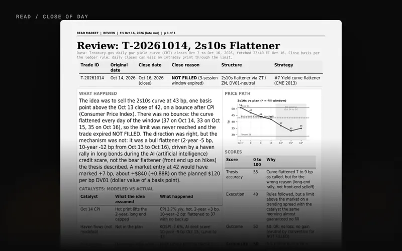
READ Market Engine
An automated sales and trading training desk. Every weekday at 8:35am ET it writes a cross-asset market packet, pitches one paper trade, and grades it at the close.
- 6-page packet: macro, rates, commodities, FX, equities, options
- 2-page trade idea on a $100,000 paper book at 1% risk
- Every number sourced and timestamped, “n/a” instead of a guess
-
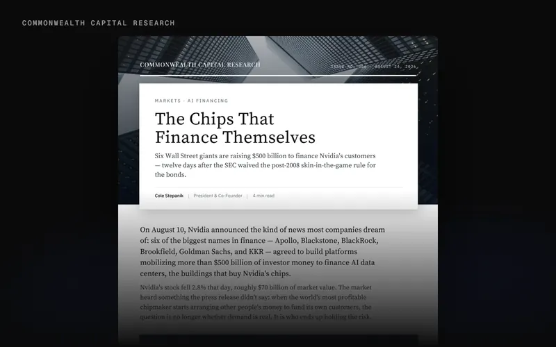
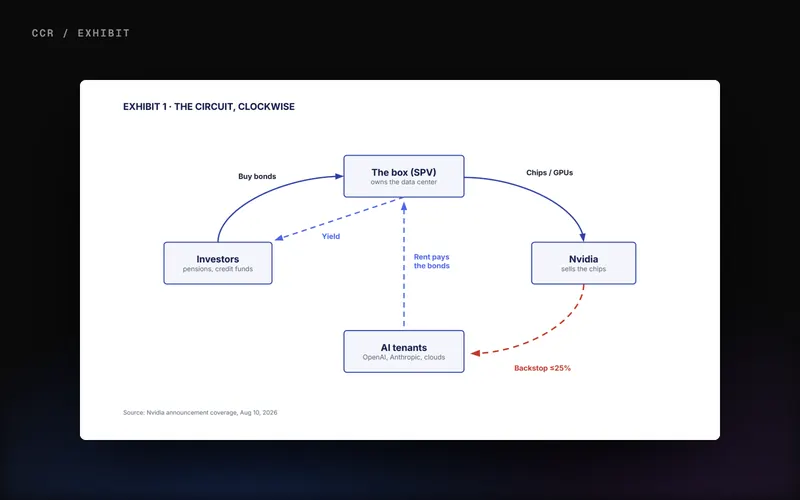
CCR Research Pipeline
2Claude skills
One deep-learns a finance topic into a research pack and talking points. The other writes and lays out a finished 700 to 1,100 word newsletter article for Commonwealth Capital Research.
-
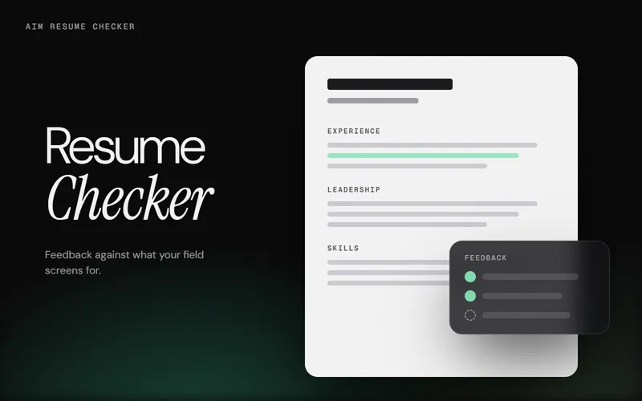
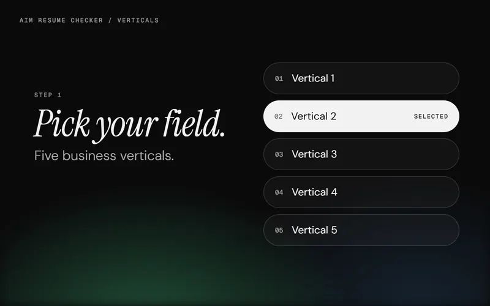
AIM Resume Checker
An in-browser resume checker for AI Multidisciplinary Society career workshops. Pick one of five business verticals and get feedback against what that field screens for.
Built for real work.
About
From the family farm in Agawam to building AI tools.
I grew up on my family's farm in Agawam, Massachusetts. Now I study Finance and Accounting at UMass Lowell and graduate in May 2027. I co-founded Commonwealth Capital Research, serve as Senior Class President, and captain the Intercollegiate Sales Team.
I also build AI tools. My flagship is Ownerhound. Away from work it is rugby, powerlifting, snowboarding, and watches.
- Home
- Agawam, MA
- School
- UMass Lowell, May 2027
- Building
- Ownerhound
- Off the clock
- Rugby, powerlifting, snowboarding, watches
Manning School of BusinessClass of 2027
My time at UMass Lowell
Finance and Accounting, graduating May 2027. Outside class, these are the clubs where I spent most of my time, and the roles I took on in each.
Visit AIM aimsociety.org
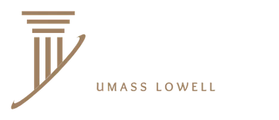
In the room
Competitions, club events, and the people I build with.
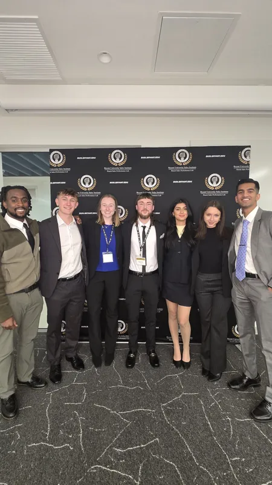
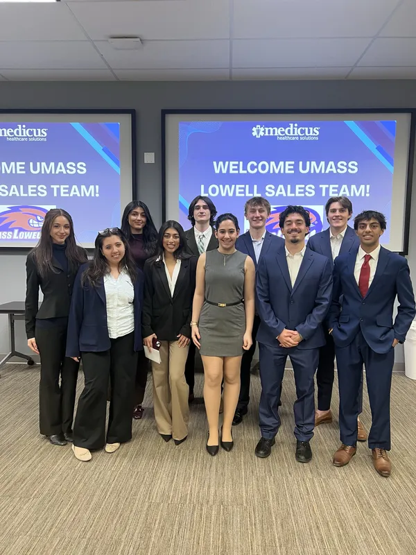
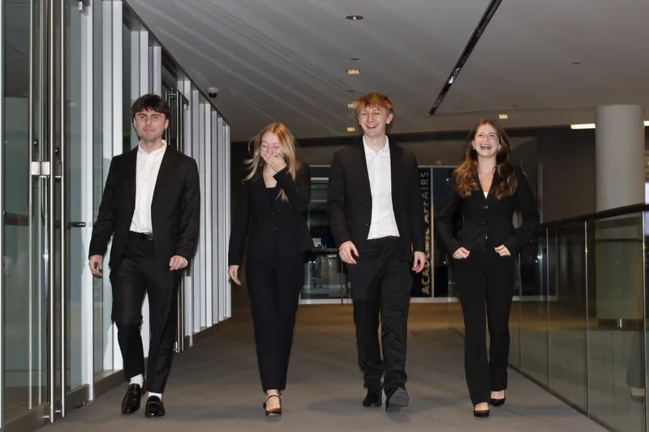
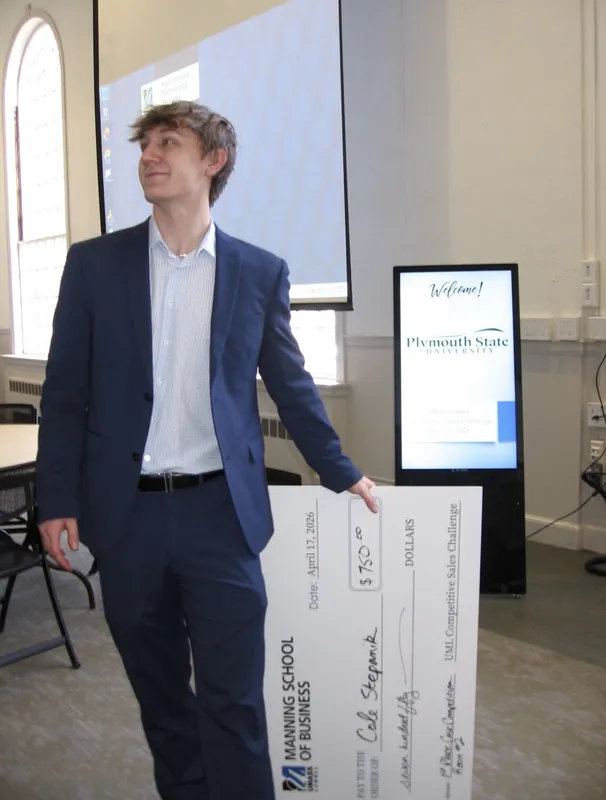
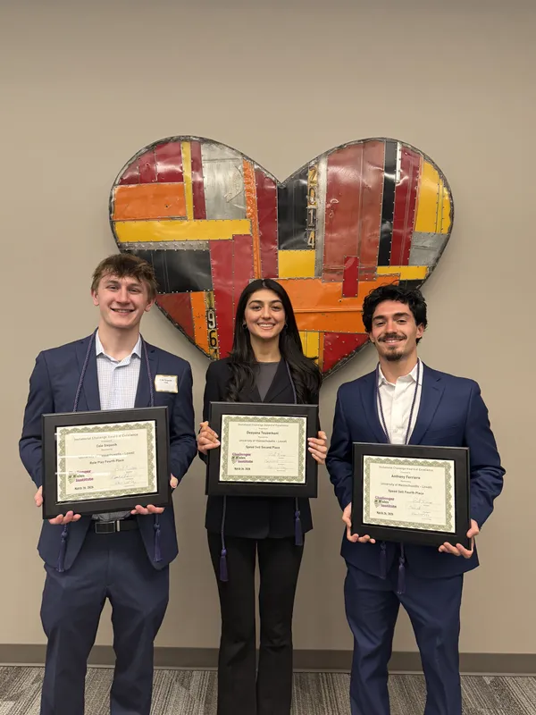
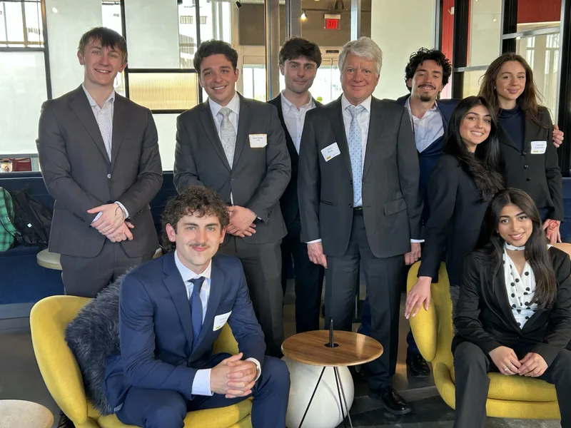
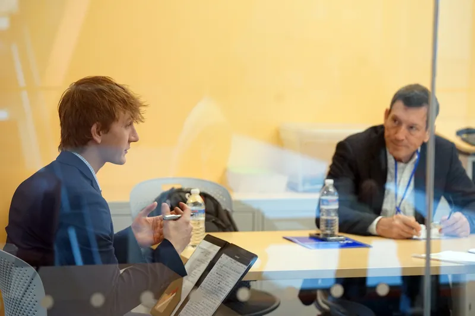
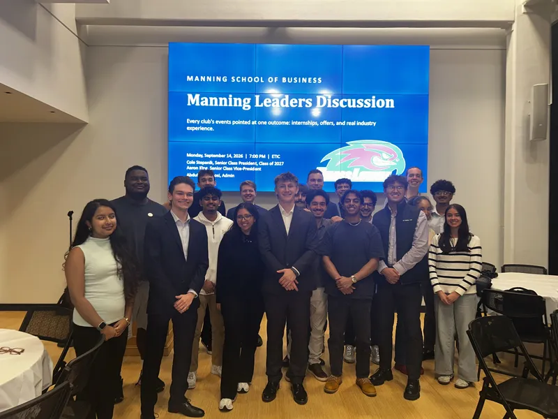
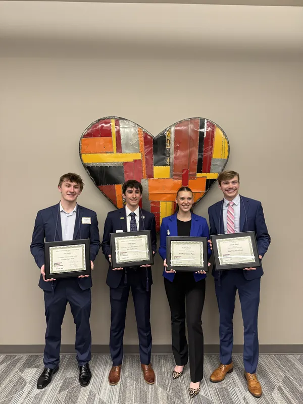
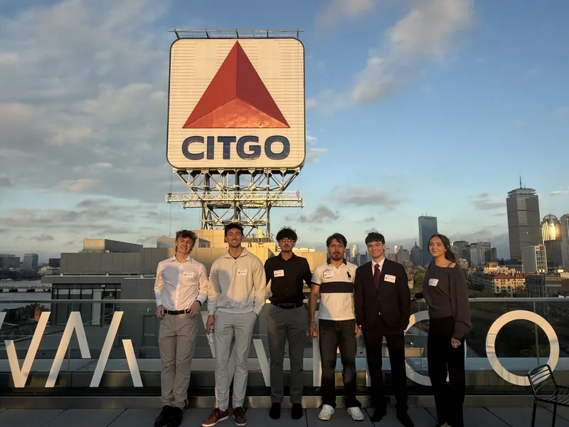
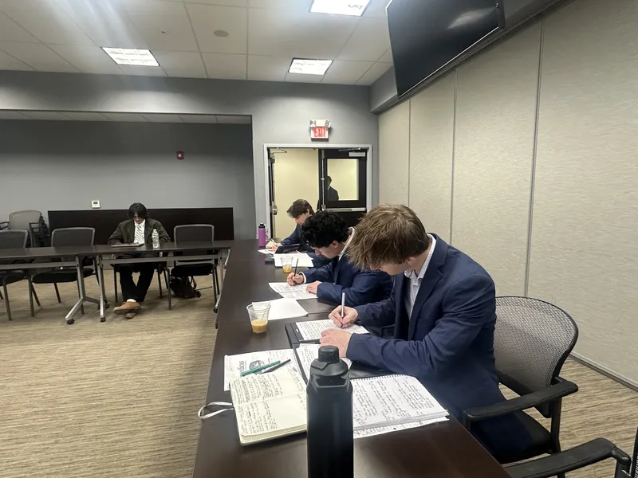
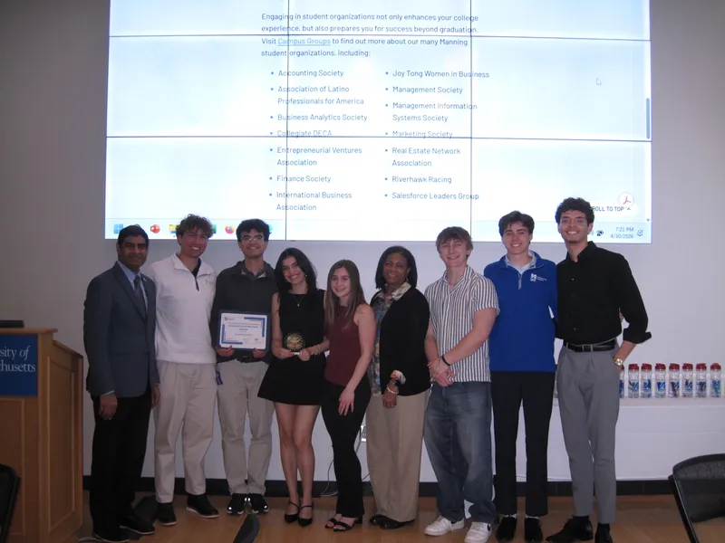
Resume
School and career, year by year.
2023-2024
-
Fall 2023Started at UMass LowellManning School of Business
-
2024TreasurerFinance Society
-
SeasonalAccountant and farmhandRichard Stepanik Farms
2025
-
Jan 2025Co-Founder and PresidentCommonwealth Capital Research
-
Feb 2025Communications ChairAccounting Society
-
Oct 2025 to Spring 2026Member, then CaptainIntercollegiate Sales Team
-
Jun 2025Investor Services InternFranklin Templeton
-
2025Bloomberg Trading Challenge+15% on $1M simulated
2026
-
Spring 2026Senior Class PresidentUMass Lowell Class of 2027
-
2026Finance ChairAI Multidisciplinary Society
-
Summer 2026Passed the FINRA SIESecurities Industry Essentials
-
Summer 2026Lead Intern, Search FundAnoush Holdings
-
Fall 2026Valuation ChallengeGeorgia State University
2027
-
May 2027GraduatingBBA, Finance and Accounting
Cole Stepanik
Education
University of Massachusetts Lowell, Manning School of BusinessExpected May 2027
Bachelor of Business Administration, Finance and Accounting (dual concentration), Honors College
3.65GPA
SIEFINRA, passed summer 2026
Dean's List2023 to 2025, Chancellor's List 2026
Coursework: Corporate Finance, Financial Statement Analysis, Investment and Portfolio Analysis, Financial Derivatives, Federal Income Taxes, Accounting Information Systems
Experience
Anoush Holdings, Cambridge, MASummer 2026 to Present
Lead Intern, Search Fund
- Run proprietary outbound sourcing to owners of lower middle market businesses: cold calling, gatekeeper navigation, and owner qualification
- Maintain a CRM of about 350 target companies and manage follow-up and seller-facing materials
- Write first-pass screens of brokered CIMs against the fund's acquisition criteria
- Interview, train, and oversee incoming sourcing interns
Commonwealth Capital Research, UMass LowellJanuary 2025 to Present
Co-Founder and President
- Co-founded and scaled a student-led investment research organization to 20+ members targeting investment banking, private equity, and corporate development
- Lead five sector teams (TMT, FIG, Healthcare, Industrials, Consumer) publishing research on M&A and PE deal flow using the Bloomberg Terminal
- Secured speakers from IB, PE, asset management, and corporate development to expand member exposure and networks
Franklin Templeton, Boston, MAJune 2025 to 2026
Investor Services Intern
- Processed high-volume mutual fund and shareholder transactions across multiple asset classes in SAP/ERP systems under FINRA and SEC requirements
- Managed trust and estate account workflows to legal, compliance, and internal audit standards
- Performed portfolio reconciliations and resolved complex client and financial-advisor account inquiries
Richard Stepanik Farms, Agawam, MASeasonal
Accountant and Farmhand (family business)
- Ran variance analysis and multi-year P&L review to find operating inefficiencies and align budget forecasts with seasonal revenue cycles
Leadership
Senior Class PresidentUMass Lowell Class of 2027, elected, 2026 to Present
CaptainIntercollegiate Sales Team, Spring 2026 to Present (member since October 2025)
Finance ChairAI Multidisciplinary Society (AIM), 2026 to Present
Communications ChairAccounting Society, 2025 to Present
Competitions
1stUML Manning Sales Challenge (Pfizer), ~35 competitors
1stALKU Sales Challenge, B2B staffing role-play
1stMedicus Sales Competition, ~20 competitors
- CSI Invitational, Oklahoma City, factoring and fuel-financing pitch, ~45 competitors4th Place
- Northeast Intercollegiate Sales Competition, B2B analytics pitch, ~80 competitors7th Place
- Georgia State University Valuation Challenge: comparable companies, precedent transactions, sensitivity analysis and the final deck for a Texas Gulf Coast EPC contractorFall 2026
Skills
- AI
- Claude, Claude Code, Claude API, agent and skill design, scheduled automations, Lovable
- Finance
- Excel (VBA, PivotTables, lookups), Bloomberg Terminal, Tableau, SAP/ERP
- Interests
- Rugby, powerlifting, snowboarding, watches, biking